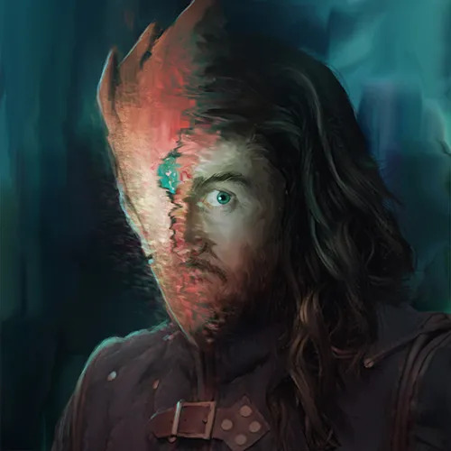

Who is INDE?
INDE has taken many forms and members have come and gone. In its current iteration, INDE is a 6-man team of creative minds from various walks of life: IT, oil, military, and so much in-between.
 'Tis I! As Lead Editor, my job is to ensure that the material in our book reads clearly and concisely; rules need to be easily understood, our story elements need to be evocative, and a reader's questions should be answered succinctly. Unless it's a mystery.
Josh "Zip" Pietrzykowski is our Glorious Leader, masterful layout editor, and the glue that binds us. The book is beautiful and our team hasn't had a nuclear meltdown because of this man.
Alex "Litharian" Robb is lovingly nicknamed "The Idea Gun." He always has a suggestion or a solution to everything. It might not always be the one we need, but it's always the one that gets us there. He is involved in lore and world building as well as the mathematical backend and our virtual tabletop outreach efforts.
James "Lost Abyss" Palumbo is our eagle-eyed creative. His primary focus is lore elements, but he has an eye for inconsistencies and system errors, which makes him invaluable in our review phases.
Cody "pul" Wiemholt" is our lead mathemagician. When we couldn't math our way out of a notebook, he developed the scripts that figured the odds for every possible dice combination and how each dice combination performed against every other possible combination. Much of the Multi-Die System's performance is thanks to him.
Philip "Tex" Barousse is our lead creative and website manager. His primary efforts are in world and lore development. When he's not braindumping crazy ideas to expand Feneryss, he's keeping our website beautiful.